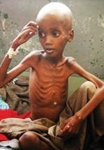
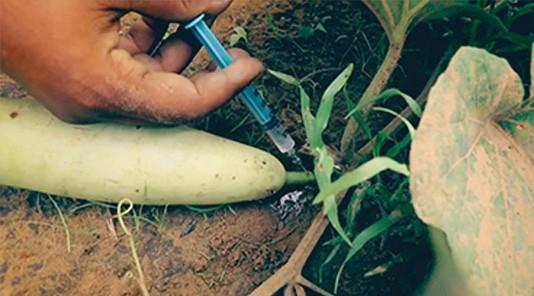

After completing this lesson, students will be able to:
understand the classification of nutrients.
list the sources, functions and deficiency disorders of vitamins and minerals.
gain knowledge about different methods of food preservation.
identify the adulterants in food.
explain the role of different food quality certifying agents of our country.
Food is the basic necessity of life. Food is defined as any substance of either plant or animal origin consumed to provide nutritional support for an organism. It contains essential nutrients that provide energy, helps in normal growth and development, repair the worn out tissues and protect the body from diseases.
Food contamination with microorganisms is a major source of illness either in the form of infections or poisoning. Food safety is becoming a major concern these days. Adulteration of foodstuffs is commonly practiced in India by traders. Food is contaminated or adulterated from production to consumption for financial gain. The normal physiological functions of a consumer are affected due to either addition of a deleterious substance or the removal of a vital component. Food laws have come into existence to maintain the quality of food produced in our country. Let us study about them in detail.
Nutrients are classified into the following major groups as given below.
Carbohydrates
Proteins
Fats
Vitamins
Minerals
Carbohydrates are organic compounds composed of carbon, hydrogen and oxygen. Carbohydrate is an essential nutrient which provides the chief source of energy to the body. Glucose, sucrose, lactose, starch, cellulose are examples for carbohydrates.
Carbohydrates are classified as monosaccharide Bracket OPEN Glucose bracket closed, disaccharide Bracket OPEN Sucrose bracket closed and polysaccharide Bracket OPEN Cellulose bracket closed. The classification is based on the number of sugar molecules present in each group.
Proteins are the essential nutrients and also the building blocks of the body. They are essential for growth and repair of body cells and tissues. Proteins are made of amino acids.
Essential amino acids are those that cannot be biosynthesized by the body and must be obtained from the diet. The nine essential amino acids are phenylalanine, valine, threonine, tryptophan, methionine, leucine, isoleucine, lysine and histidine.
Fat in the diet provides energy. They maintain cell structures and are involved in metabolic functions.
Essential fatty acids cannot be synthesized in the body and are provided through diet. Essential fatty acids required in human nutrition are omega fatty acids.
Vitamins are the vital nutrients, required in minute quantities to perform specific physiological and biochemical functions.
BOX ITEM OPEN
Dr Funk introduced the term vitamin. Vitamin A was given the first letter of the alphabet, as it was the first vitamin discovered. BOX ITEM ENDS
BOX ITEM OPEN
Human skin can synthesize Vitamin D when exposed to sunlight Bracket OPEN especially early morning bracket closed. When the sun rays falls on the skin dehydrocholesterol is converted into Vitamin D. Hence, Vitamin D is called as Sunshine vitamin. Vitamin D improves bone strength by helping body to absorb calcium. BOX ITEM ENDS
Minerals are inorganic substances required as an essential nutrient by organisms to perform various biological functions necessary for life. They are the constituents of teeth, bones, tissues, blood, muscle and nerve cells.
The macro minerals required by the human body are calcium, phosphorus, potassium, sodium and magnesium. The microminerals required by the human body also called trace elements are sulfur, iron, chlorine, cobalt, copper, zinc, manganese, molybdenum, iodine and selenium.
Absence of certain nutrients in our daily diet over a long period of time leads to deficiency diseases. This condition is referred as Malnutrition. Deficiency of proteins and energy leads to severe conditions like: Kwashiorkar and Marasmus.
Table 21.1 Dietary sources of major foodstuffs was given below
Major food stuffs |
Dietary sources |
Daily requirements Bracket OPENgramsbracket closed |
Carbohydrates |
Honey, sugarcane, fruits, wholegrains starchy vegetables, rice |
150 to 200 |
Proteins |
Legumes, pulses, nuts, soya bean, green leafy vegetables, fish, poultry products, egg, milk and dairy products |
40 |
Fats |
Egg yolk, saturated oil meat |
35 |
Table 21.2 Vitamins-Dietary sources, Deficiency disorders and Symptoms was given below
Vitamins |
Sources |
Deficiency disorders |
Symptoms |
Fat Soluble Vitamins |
|||
Vitamin A |
Carrot Papaya, leafy vegetables, fish liver oil egg yolk, liver, dairy products |
Xerophthalmia Nyctalopia Bracket OPEN Night blindness bracket closed |
Dryness of Cornea Unable to see in the night Bracket OPEN dim light bracket closed Scaly skin |
Vitamin D |
Egg, liver, diary products, Fish, synthesized by the skin in sunlight |
Rickets Bracket OPEN in children bracket closed |
Bow legs, defective ribs, development of pigeon chest |
Vitamin E |
Whole wheat, meat, vegetable, oil, milk |
Sterility in rat, Reproductive abnormalities |
Sterility |
Vitamin K |
Leafy vegetables, soyabeans, milk |
Blood clotting is prevented |
Excessive bleeding due to delayed blood clotting |
Water soluble Vitamins |
|||
Vitamin B1 |
Whole grains, yeast, eggs, liver, sprouted pulses |
Beriberi |
Degenerative changes in the nerves, muscles become weak, paralysis |
Vitamin B2 |
Milk, eggs liver, green vegetables, whole grains |
Ariboflavinosis Bracket OPEN Cheilosis bracket closed |
Irritation in eyes, dry skin, inflammation of lip fissures in the corners of the mouth |
Vitamin B3 |
Milk, eggs, Liver, lean meat, ground nuts, bran |
Pellagra |
Inflammation of skin, loss of memory, diarrhoea |
Vitamin B6 |
Meat, fish, eggs, germs of grains and cereals, rice polishings |
Dermatitis |
Scaly skin, nervous disorders |
Vitamin B12 |
Milk, meat liver, |
Pernicious anaemia |
Decrease in red blood cell production, degeneration of spinal cord |
Vitamin C |
Leafy vegetables, sprouts, citrus fruits like goose berry Bracket OPEN Amla bracket closed, lemon, orange |
Scurvy |
Swollen and bleeding gums, delay in healing of wounds, teeth and bones malformed |
Table 21.3 Minerals - Dietary sources, Functions and Deficiency disorders was given below
Minerals |
Sources |
Functions |
Deficiency disorders |
Macronutrients |
|||
Calcium |
Dairy products, beans, cabbage, eggs, fish |
Constituent of bones and enamel of teeth, clotting of blood and controls muscle contraction. |
Bone deformities, poor skeletal growth, osteoporosis in adults. |
Sodium |
Common salt |
Maintains fluid balance and involved in neurotransmission. |
Muscular cramps, nerve impulses do not get transmitted. |
Potassium |
Banana, sweet potato, nuts, whole grains, citrus fruits |
Regulates nerve and muscle activity. |
Muscular fatigue, nerve impulses do not get transmitted. |
Micronutrients |
|||
Iron |
Spinach, dates, greens, broccoli, whole cereals, nuts, fish, liver |
Important component of haemoglobin. |
Anaemia |
Iodine |
Milk, Seafood, Iodised salt |
Formation of thyroid hormones. |
Goitre |
Kwashiorkar: It is a condition of severe protein deficiency. It affects children between 1 to 5 years of age, whose diet mainly consists of carbohydrates but lack in proteins.
Marasmus: It usually affects infants below the age of one year when the diet is poor in carbohydrates, fats and proteins.
Figure 21.1 Malnutrition Kwashiorkar and Marasmus image was given below

Food spoilage is an undesirable change in the normal state of food and is not suitable for human consumption. Poor personal hygiene may allow pathogenic microorganisms to cause food spoilage. Signs of food spoilage include a changes in appearance, colour texture, odour and taste. Factors responsible for Food Spoilage are given below.
Internal factors: It includes enzymatic activities and moisture content of the food.
External factors: It includes adulterants in food, contaminated utensils and equipment, unhygienic cooking area and lack of storage facilities.
Food preservation is the process of prevention of food from decay or spoilage, by storing in a condition fit for future use. Food is preserved to:
increase the shelf life of food
retain the colour, texture, flavour and nutritive value
increase food supply
decrease wastage of food
The various method of food preservation are explained below.
Drying: Drying is the process of preservation of food by removal of water/moisture content in the food. It can be done either by sun-drying, Bracket OPEN Example cereals, fish bracket closed or vacuum drying Bracket OPEN Example milk powder, cheese powder bracket closed or hot air drying Bracket OPEN Example grapes, dry fruits, potato flakes bracket closed. Drying inhibits the growth of microorganism such as bacteria, yeasts and moulds.
Smoking: In this process, food products like meat and fish are exposed to smoke. The drying action of the smoke tends to preserve the food.
Irradiation: Food irradiation is the process of exposing food to optimum levels of ionizing radiations like x-rays, gamma rays or UV rays to kill harmful bacteria and pests and to preserve its freshness.
Cold storage: It is a process of storing the perishable foods such as vegetables, fruits and fruit products, milk and milk products etc. at low temperature. Preserving the food products at low temperature slows down the biological and chemical reactions and prevents its spoilage.
Freezing: Freezing is one of the widely used methods of food preservation. This process involves storing the food below 0 degree Celsius at which microorganisms cannot grow, chemical reactions are reduced and metabolic reactions are also delayed.
Pasteurization: Pasteurization is a process of heat treatment of liquid food products. Example For preservation of milk and beverages. This process also involves boiling of milk to a temperature of 63 degree Celsius for about 30 minutes and suddenly cooling to destroy the microbes present in the milk.
Box item OPEN
Bananas are best stored at room temperature. When it is kept in a refrigerator, the enzyme responsible for ripening becomes inactive. In addition, the enzyme responsible for browning and cell damage becomes more active thereby causing the skin colour change from yellow to dark brown. BOX ITEM ENDS
Canning: In this method of food preservation, most vegetables, fruits, meat and dairy products, fruit juices and some ready-to-eat foods are processed and stored in a clean, steamed air tight containers under pressure and then sealed. It is then subjected to high temperature and cooled to destroy all microbes.
Food can be preserved by adding natural and synthetic preservatives.
A. Natural preservatives
Some naturally available materials like salt, sugar and oil are used as food preservatives.
Addition of salt: It is one of the oldest methods of preserving food. Addition of salt removes the moisture content in the food by the process of osmosis. This prevents the growth of bacteria and reduces the activity of microbial enzymes. Meat, fish, gooseberry, lemon and raw mangoes are preserved by salting. Salt is also used as a preservative in pickles, canned foods etc.
Addition of sugar: Sugar/Honey is added as a preservative to increase the shelf life of fruits and fruit products like jams, jellies, squash, etc. The hygroscopic nature of sugar/honey helps in reducing the water content of food and also minimizing the process of oxidation in fruits.
Addition of oil: Addition of oil in pickles prevents the contact of air with food. Hence microorganisms cannot grow and spoil the food.
Synthetic food preservatives like sodium benzoate, citric acid, vinegar, sodium meta bisulphate and potassium bisulphate are added to food products like sauces, jams, jellies, packed foods and ready- to eat foods. These preservatives delay the microbial growth and keep the food safe for long duration.
Box item OPEN
October 16th is World Food Day. It emphasizes on food safety and avoiding food wastage. BOX ITEM ENDS
Adulteration is defined as the addition or subtraction of any substance to or from food, so that the natural composition and the quality of food substance is affected. Adulterant is any material which is used for the purpose of adulteration.
Some of the commonly adulterated foods are milk and milk products, cereals, pulses, coffee powder, tea powder, turmeric powder, saffron, confectionary, non-alcoholic beverages, spices, edible oils, meat, poultry products etc. The adulterants in food can be classified in three categories:
1. Natural adulterants
2. Incidental/unintentionally added adulterants
3. Intentionally added adulterants
Natural adulterants are those chemicals or organic compounds that are naturally present in food. Example toxic substances in certain poisonous mushrooms, Prussic acid in seeds of apples and cherry, marine toxins, fish oil poisoning, environmental contaminants
These types of adulterants are added unknowingly due to ignorance or carelessness during food handling and packaging. It includes:
a. Pesticide residues
b. Droppings of rodents, insects, rodent bites and larva in food during its storage
c. Microbial contamination due to the presence of pathogens like Escherichia coli, Salmonella in fruits, vegetables, ready-to-eat meat and poultry products
These adulterants are added intentionally for financial gain and have serious impact on the health of the consumers. These types of adulterants include:
a. Additives and preservatives like vinegar, citric acid, sodium bicarbonate Bracket OPEN baking soda bracket closed, hydrogen peroxide in milk, modified food starch, food flavours, synthetic preservatives and artificial sweeteners.
b. Chemicals like calcium carbide to ripen bananas and mangoes.
c. Non certified food colours containing chemicals like metallic lead are used to give colours to vegetables like green leafy vegetables, bitter gourd, green peas etc. These colours are added to give a fresh look to the vegetables.
Image was given below

d. Edible synthetic wax like shellac or carnauba wax is coated on fruits like apple, pear to give a shining appearance.
Consumption of these adulterated foods may lead to serious health effects like fever, diarrhoea, nausea, vomiting, gastrointestinal disorders, asthma, allergy, neurological disorder, skin allergies, immune suppression, kidney and liver failure, colon cancer and even birth defects.
The government always ensures that pure and safe food is made available to the consumers. In 1954, the Indian Government enacted the Food Law known as Prevention of Food Adulteration Act and the Prevention of Food Adulteration Rules in 1955 with the objective of ensuring pure and wholesome food to the consumers and protect them from fraudulent trade practices.
Minimum standards of quality for food and strict hygienic conditions for its sale are clearly outlined in the Act.
Box item OPEN
A slogan From farm to plate, make food safe was raised on World Health Day Bracket OPEN 7th April 2015bracket closed to promote and improve food safety. Box item ends
ISI, AGMARK, FPO, FCI and other health departments enforce minimum standards for the consumer products. FCI Bracket OPEN Food Corporation of India bracket closed was set up in the year 1965 with the following objectives:
Effective price support operations for safeguarding the interest of farmers.
Distributing food grains throughout the country.
Maintaining satisfactory levels of operational and buffer stock of food grains to ensure national security.
Regulate the market price to provide food grains to consumers at reliable price.
Box item open
Let each of the student bring any food packet Bracket OPEN jam, juice, pickle, bread, biscuit, etc bracket closed. Note down the details like name of the product, manufacturer’s details, contents/ ingredients, net weight, Maximum Retail Price Bracket OPEN MRP bracket closed, date of manufacture, date of expiry/usage from the date of manufacture and standardized marks Bracket OPEN ISI, AGMARK or FPO bracket closed printed on the label for each of the item. What is the aim of such practice question mark box item ends
Food Control Agencies- Their Standardized Mark and Role in Food Safety
|
ISI Bracket OPEN Indian Standards Institution bracket closed Known as Bureau of Indian Standard Bracket OPEN BIS bracket closed |
Certifies industrial products like electrical appliances like switches, wiring cables, water heater, electric motor, kitchen appliances etc. |
|
AGMARK Bracket OPEN Agricultural Marking bracket closed |
Certifies agricultural and livestock products like cereals, essential oils, pulses, honey, butter etc. |
|
FPO Bracket OPEN Fruit Process Order bracket closed |
Certifies the fruit products like juices jams sauce canned fruits and vegetables pickles etc. |
|
Food Safety and Standards Authority of India |
Responsible for protecting and promoting the public health through regulation and supervision of food safety |
Box item open
Some simple techniques used to detect adulterants at home
1. Milk: Place a drop of milk on a slanting polished surface. Pure milk flows slowly leaving a trail behind while the milk adulterated with water will flow fast without leaving a trail.
2. Honey: Dip a cotton wick in honey and light it with a match stick. Pure honey burns while adulterated honey with sugar solution gives a cracking sound.
3. Sugar: Dissolve sugar in water. If chalk powder is added as an adulterant, it will settle down.
4. Coffee powder: Sprinkle a few pinches of coffee powder in a glass of water. Coffee powder floats. If it is adulterated with tamarind powder it settles down.
5. Food grains: They have visible adulterants like marble, sand grit, stones, etc. These are removed by sorting, hand picking, washing etc. box item ends
Food is necessary for normal growth and development of living organisms.
Prolonged deficiency of certain nutrients cause deficiency diseases leading to malnutrition.
Drying smoking, irradiation, refrigeration, freezing, pasteurization and canning are some of the methods of food preservation.
Adulterants are undesirable substances added to the food against the Food Safety Standards.
Prevention of Food Adulteration Act, 1954 laid down the minimum standards for consumer products.
Fatigue Extreme tiredness due to mental or physical illness.
Hygroscopic The property of absorbing moisture from the air.
Muscular cramps Sudden and involuntary contractions of one or more muscles.
Nutrients Substance that provide nourishment for normal growth and development.
Nerve impulse Electric signals that travels along a nerve fibre.
Nourishment Food that you need to grow and stay healthy.
Osteoporosis A diseases which weakens the bones and makes it brittle.
Paralysis Loss of muscle function in any part of our body which can be either temporary or permanent.
Shelf life Time for which a food can be kept fresh.
Toxins Any poisonous substance produced by bacteria, animals or plants.